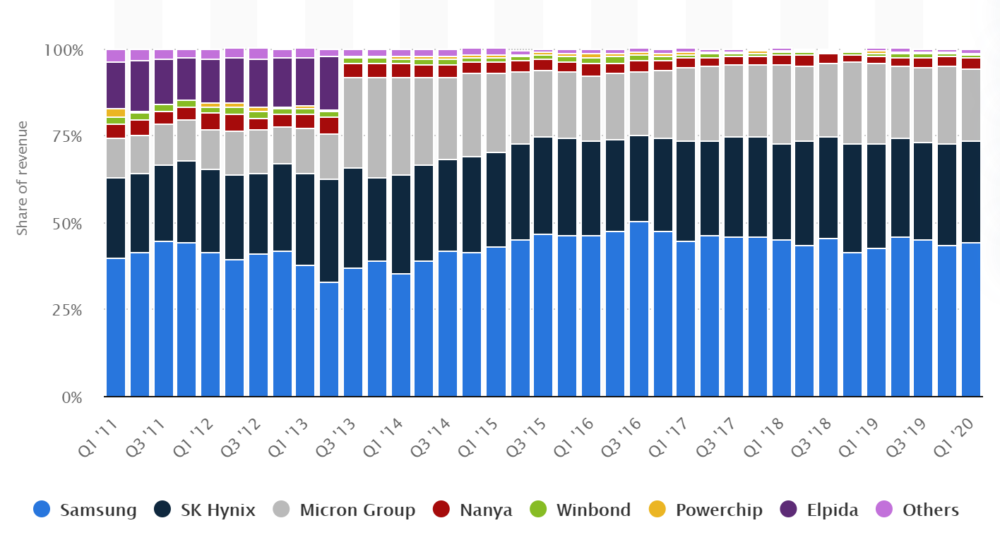
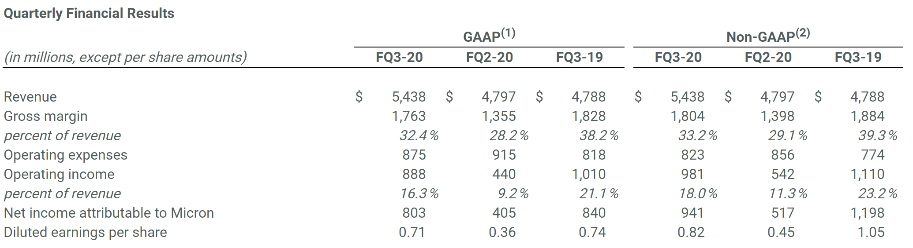
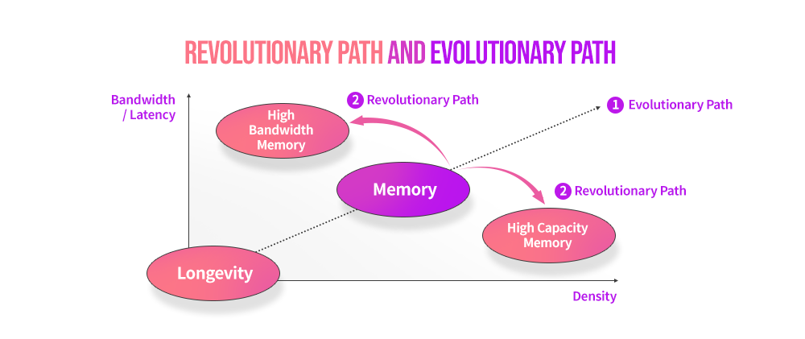
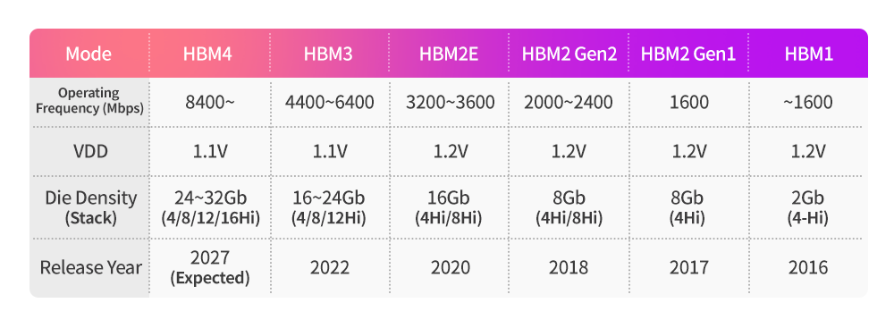

Market Trends
1.DRAM prices on downward trend, boding ill for Korean chipmakers(Korea herald 2020-06-17)
Spot market prices for DRAM chips are on a downward trend after reaching their peak in April, industry data showed Wednesday, boding ill for South Korean chipmakers.
……
On June 9, the spot price of 8-gigabit DDR4 DRAM fell below $3 for the first time since Dec. 13, according to DRAMeXchange.
……
The drop in chip prices may hurt South Korean chipmakers. Samsung Electronics Co. and SK hynix Inc. held a combined 73.4 percent market share in the first quarter, DRAMeXchange data showed.
A spot price is the price quoted in the market, while contract prices are negotiated as monthly or quarterly deals. Changes in spot prices usually affect contract prices. Generally, 90 percent of DRAM chips are traded on contract quotes.
2.DRAM chip market share by manufacturer worldwide from 2011 to 2020(Statista, 2020-06-19)
In the first quarter of 2020, Samsung held a market share of 44.1 percent, an increase from the 43.5 percent share that the company occupied in the fourth quarter of 2019. SK Hynix also increased their market share, gaining one percent from the previous quarter.
COVID-19 impacts
Overall DRAM revenues amounted to 14.82 billion U.S. dollars for the first quarter of 2020, down from the 15.54 billion U.S. dollars observed in the fourth quarter of 2019. As the source suggests, the impacts of the coronavirus (COVID-19) outbreak were felt by the industry, with disruption to logistics operations affecting DRAM shipments, resulting in global DRAM revenue to decrease by 4.6% quarter on quarter (QoQ).
DRAM vs SRAM
The primary memory of a computer is called RAM, with the two most used forms of modern RAM being static RAM (SRAM) and dynamic RAM (DRAM). DRAM is a type of volatile memory which, unlike non-volatile flash memory, loses data quickly when cut off from a power supply. Compared to other varieties of volatile memory, DRAM is relatively structurally simple. Whereas SRAM requires four to six transistors per bit, DRAM requires only one transistor and capacitor per bit. The global DRAM market generates over 15 billion U.S. dollars each quarter, with Samsung being the largest manufacturer of DRAM in terms of revenues.

3.外資看下半年記憶體市場，DRAM 利基型價格下跌幅度將高於主流規格 (TechNews, 2020-07-01)
進入第三季，外資摩根士丹利保守看待下半年記憶體價格走勢。大摩指出，從需求面來看，包含電視與手機在內的消費性電子領域仍受到 COVID-19 影響導致需求不佳，而此負面因素也衝擊了利基型 DRAM 市場，預估下半年利基型 DRAM 價格的跌幅將高於主流規格，第三季跌幅將達 10%。
大摩指出，從 6 月的 DRAM 價格走勢來看，已反映消費性電子需求疲弱的狀況。根據市調機構 TrendForce 的報價，6 月利基型 DRAM 價格下跌 4%。進入到第三季，相較於主流 DRAM 平均價格將比第二季下跌約 5%（其中，PC 與伺服器 DRAM 價格下跌 5%，mobile DRAM 持平）、利基型 DRAM 則會出現 10% 左右的價格跌幅。
在這份大摩所出具的最新報告中，也分析了目前市場關注的中國記憶體廠發展。大摩認為，中國 DRAM 廠的競爭力將逐步增強，並觀察到關鍵 DRAM 模組廠金士頓已經開始向長鑫存儲購買 DRAM 產品，用於在中國本土 PC/NB 市場的銷售，並且提到長鑫存儲月產能從第一季的 2 萬片已成功擴增至 3 萬片。
Vendor News
1.Samsung Electronics: Steep Growth to Resume from 3Q20(businesskorea, 2020-06-22）
……
Earnings should sharply recover in 3Q20, with sales forecast at KRW64.12tr (+18.2% QoQ) and operating profit at KRW9.44tr (+53.0% QoQ). Display and IM shipments have recovered at a rapid pace from June after temporarily slowing down on impact of the COVID-19 pandemic. We also expect to see slight QoQ improvement in earnings from semiconductors in 3Q20.
……
We believe forecasts for sluggish 2Q20 earnings results as well as the slowdown in demand for mobile DRAM in 2Q20 and server DRAM in 3Q20 are already priced in at this point. Going forward, share prices should start to reflect the upbeat outlook for steep earnings growth from 3Q20. We expect to confirm an upturn in demand for mobile and server chips in stages through 2H20.
In 2021, DRAM bit growth is projected to fall to historical lows of 10% for the full year. With demand likely to recover from the COVID-19 shock, we expect to see extreme supply shortages in the DRAM market next year. Samsung Electronics shares tend to move far ahead of actual changes in earnings. We therefore recommend accumulating shares on expectations for steep growth in 3Q20 and 1H21, instead of remaining concerned over 2Q20 results. Our target price is unchanged at KRW68,000.
2.Samsung builds sprawling new ‘total semiconductor factory’(etnews, 2020-06-23)
Samsung is currently in the process of building a sprawling new component manufacturing complex in Pyeongtaek, South Korea, reports SamMobile. The site notes a local outlet called etnews broke the story regarding the firm’s 7,534-square foot production facility.
The conglomerate’s theoretical third Pyeongtaek-based foundry (P3) is big enough to serve as a “total semiconductor factory” capable of producing a range of microelectronics.
…………
The corporation intends the facility to go online in late 2021 after construction is completed. The P3 foundry is said to be around 3,200-square feet longer than Samsung’s $26.4 billion second Pyeongtaek (P2) factory.
Because of its massive footprint, etnews speculates Samsung could intend P3 to serve as a manufacturing hub capable of fabricating NAND, DRAM, image sensors, and handset application processors.
3. First China-Built DRAM Chip Reaches Market(CXTech 2020-06-12)
China’s first domestically built DRAM chips, developed by ChangXin Memory Technologies Inc., reached the market in a step forward in the country’s long-pursued effort to enter a lucrative electronic sector dominated by foreigners.
Several memory devices powered by ChangXin’s DRAM chips have appeared on the domestic market since May. Leading flash storage producer Shenzhen Longsys Electronics Co. Ltd. said May 15 that ChangXin’s chips passed related tests and would equip three of its storage products.
ChangXin’s chips have met basic criteria but may still fall short of capability requirements of higher-end customers compared with products of industry leaders, an analyst said. DRAM chips, for dynamic random access memory, are essential building blocks for storing information in most electronic devices such as computers and smartphones.
ChangXin is among a handful of Chinese chipmakers exploring DRAM production and has invested 15 billion yuan in the campaign. Most of the world’s DRAM and NAND, the other major kind of memory, are currently produced by South Korea’s Samsung and SK Hynix, as well as U.S. producer Micron Technology, which collectively control 90% of the global market.
4.Micron Technology, Inc. Reports Results for the Third Quarter of Fiscal 2020 (Micron 2020-06-30)
Fiscal Q3 2020 highlights
Revenue of $5.44 billion versus $4.80 billion for the prior quarter and $4.79 billion for the same period last year
GAAP net income of $803 million, or $0.71 per diluted share
Non-GAAP net income of $941 million, or $0.82 per diluted share
Operating cash flow of $2.02 billion versus $2.00 billion for the prior quarter and $2.71 billion for the same period last year

5.美光科技第三财季营收54.38亿美元 净利同比降4%(新浪科技 2020-06-30)
北京时间6月30日凌晨消息，美光科技今日发布了该公司的2020财年第三财季财报。报告显示，美光科技第三财季营收为54.38亿美元，相比之下去年同期的营收为47.88亿美元；净利润为8.03亿美元，与去年同期的8.40亿美元相比下降4%。美光科技第三财季营收和调整后每股收益均超出华尔街分析师预期，第四财季业绩展望也超出预期，从而推动其盘后股价大幅上涨逾6%。
……
美光科技预计，2020财年第四财季的营收将达57.5亿美元到62.5亿美元，超出分析师预期。据雅虎财经频道提供的数据显示，29名分析师此前平均预期美光科技第四财季营收将达54.7亿美元。
New Technology
1.Diversification of DRAM Application and Memory Hierarchy(SKhynix 2020-06-18）
Installed in various application devices like PCs, servers, smartphones and gaming devices, Dynamic Random Access Memory, or DRAM, plays the role of main memory, which is responsible for the storage of data processed by CPU operations.
DRAMs fall under the larger category of Random Access Memories, or RAMs, which process data access randomly. Out of this group, the structure of DRAM is the simplest, allowing for high capacity, rapid read and write speed, and cost competitiveness. It is for these reasons that DRAMs are so popular in today’s market. However, a DRAM’s simple structure also means that data is stored within a capacitor, where data slowly exhausts over time. To manage this volatility, DRAMs require periodic data charging called ‘refresh.’
In general, DRAMs are classified into several fields, each evolving into their own optimized forms. This article will explore the growing fields of computing, mobile and graphic application memories.


……